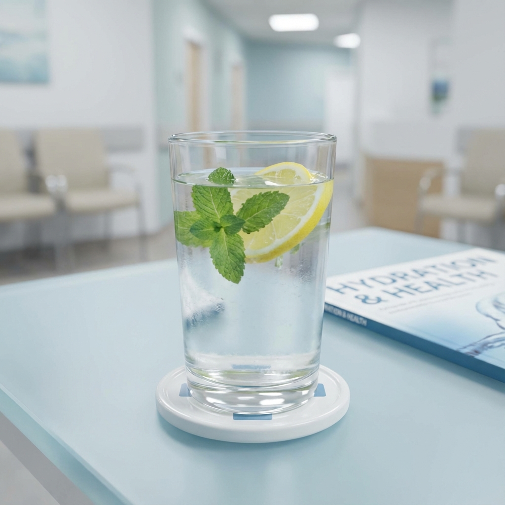

Rëndësia e Hidratimit
Uji është burimi i jetës. Trupi i njeriut përbëhet deri në 60% nga uji, dhe ai luan një rol vital në çdo
funksion trupor, nga rregullimi i temperaturës deri te funksionimi i trurit.
Pse është kaq i rëndësishëm uji?
- Rregullon temperaturën e trupit: Përmes djersitjes dhe frymëmarrjes, uji ndihmon në
mbajtjen e temperaturës stabël.
- Mbron indet dhe nyjet: Uji vepron si lubrifikant për nyjet dhe mbron palcën kurrizore.
- Ndihmon tretjen: Uji është thelbësor për shpërbërjen e ushqimit dhe përthithjen e
lëndëve ushqyese.
- Përmirëson funksionin e trurit: Dehidratimi i lehtë mund të ndikojë në përqendrim,
humor dhe kujtesë.
Sa ujë duhet të pini?
Rregulli i vjetër "8 gota në ditë" është një udhëzues i mirë, por nevojat ndryshojnë në bazë të:
- Aktivitetit fizik: Nëse ushtroni, humbni më shumë ujë dhe duhet të pini më shumë.
- Klimës: Moti i nxehtë ose i lagësht kërkon më shumë hidratim.
- Gjendjes shëndetësore: Nëse keni temperaturë ose jeni sëmurë, trupi kërkon më shumë
lëngje.
Shenjat e Dehidratimit
Kujdesuni për këto shenja që tregojnë se trupi juaj ka nevojë për ujë:
- Etje ekstreme
- Gojë e thatë
- Lodhje ose përgjumje
- Dhimbje koke
- Urinë me ngjyrë të errët
Këshillë: Mos prisni derisa të keni etje për të pirë ujë. Mbani gjithmonë një shishe ujë me
vete!
← Kthehu në Ballinë